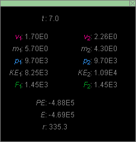
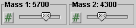
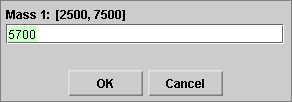
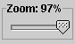

There are four basic control buttons. They are, from left to right:
-
 Rewind. Resets the simulation to the initial
position with the previously chosen initial values. If
you have the particle path displayed, Rewind will allow
you to compare paths traversed under different
conditions, e.g., different initial velocities.
Rewind. Resets the simulation to the initial
position with the previously chosen initial values. If
you have the particle path displayed, Rewind will allow
you to compare paths traversed under different
conditions, e.g., different initial velocities.
After clicking Rewind, click Play to restart the motion.
-
 Play/Pause. Starts the motion.
Play/Pause. Starts the motion.
After Play has been clicked, the button will change into the Pause button
 .
.
Clicking Pause will freeze the motion. To resume the motion, click Play once more.
-
 Step. Lets you step through the motion in equal
time steps.
Step. Lets you step through the motion in equal
time steps.
-
 Reset. Resets the applet to its default
setting.
Reset. Resets the applet to its default
setting.
Adjustments in the initial conditions can only be made after first clicking REWIND or RESET.


The two planets exert gravitational forces on each other. The Forces toggle button allows to either display or hide the two force vectors. The vectors are shown in green.
The Velocities toggle button allows to either display or hide the velocity vectors of the two planets. The vectors are shown in magenta.

The Momenta toggle button allows to either display or hide the momentum vectors of the two planets. The vectors are shown in blue.
The Data toggle button either displays or hides the Data box shown below. If you click on the Data box and drag, you can move it anywhere on the screen or even off the screen.

The following data are displayed in the Data box. All data are in unspecified units. Subscripts "1" and "2" refer to the planet on the left and on the right, respectively. For an explanation of how the forces and PE or E are calculated, please go to ShowMe or Lesson.
- t: time elapsed from the start of the motion
- v: planet's speed
- m: planet's mass
- p: magnitude of the planet's momentum
- KE: kinetic energy of the planet
- F: magnitude of the gravitational force acting on the planet
- PE: potential energy of the two-planet system
- E: total mechanical energy of the two-planet system
- r: distance between the two planets, center to center
There are two mass sliders, shown in the following image, for the masses of the two planets. Clicking on a slider to the left or right of the slider tab allows fine adjustment of the slider setting.

The sliders are coupled, in the sense that entering a value on one slider will automatically adjust the value on the other slider so that the sum of the two masses is always equal to 10,000. There are no mass units indicated because all quantities in the applet are in unspecified units.
Clicking on the Input Dialog button  of a slider will open a dialog for entering an exact
value for the slider setting. The dialog for the Mass-1
slider that sets the mass of Planet 1 is illustrated
below. The range in which values can be entered, from
2,500 to 7,500 in this case, is indicated above the data
entry field.
of a slider will open a dialog for entering an exact
value for the slider setting. The dialog for the Mass-1
slider that sets the mass of Planet 1 is illustrated
below. The range in which values can be entered, from
2,500 to 7,500 in this case, is indicated above the data
entry field.


The length scale and the scale of the arrows representing vector quantities can be simultaneously adjusted between 25% and 100% by means of the Zoom slider. By clicking to the left or the right of the slider tab, one can decrease or increase the slider setting by 1% at a time.
The slider does not have a button for exact value entry because being able to set the Zoom at a specific value is not going to be important.
When the "Pause Before Collision" check box is checked, the motion of the two planets will pause just before the moment of collision. Unchecking the box at this point will cause the planets to resume their motion and collide.
The center of mass of the two-planet system is indicated by a small red circle.